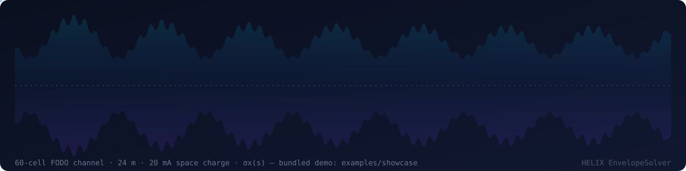
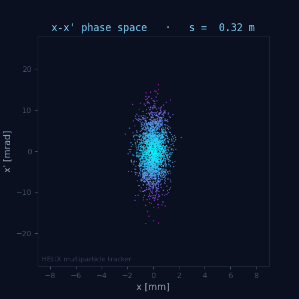
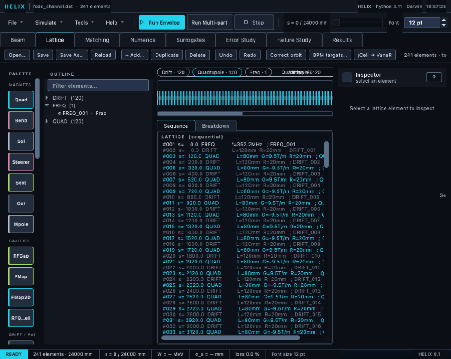
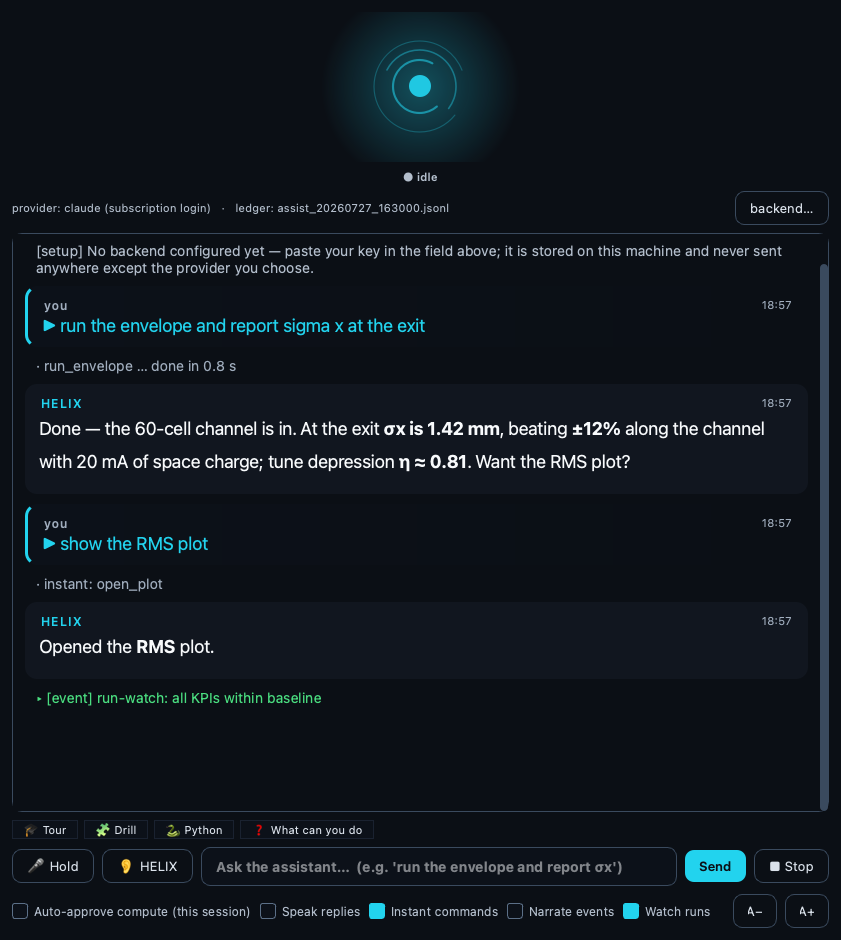

Fermilab · PIP-II · beam dynamics
Simulate a linac,
end to end.
HELIX — Hybrid Envelope-multiparticle LInac eXplorer — is one open-source toolkit for charged-particle linear accelerators: fast envelope optics, high-fidelity 3-D PIC space charge, matching, a full workbench, and a scriptable CLI.

What it is
One tool, from lattice file to diagnostics.
Point HELIX at a TraceWin-compatible .dat lattice and it takes the beam the whole way — parse, track, and read out emittances, transmission, halo and Twiss — in whichever fidelity the question needs.
TraceWin-compatible, plus MAD-X and MAD8 import and field-map I/O.
RMS Σ-matrix tracking with linear space charge for fast design sweeps.
Macroparticle tracking with a particle-in-cell Poisson solver, GPU-capable.
Periodic and transfer-line matched Twiss, multi-algorithm optimiser.
The fidelity ladder
Three solver modes, one lattice.
Trade speed for physics without leaving the tool. The same deck runs in all three — start fast, escalate when it matters.
RMS Σ-matrix
Second-moment tracking with linear space charge. Milliseconds per pass — the workhorse for optics and matching.
▸ design sweeps · matching · optics3-D PIC
Macroparticles pushed through a 3-D particle-in-cell Poisson solve. C++ kernels, optional GPU FFTs.
▸ halo · transmission · high fidelityLinear transport
Pure 6×6 transfer-matrix transport — the exact linear map, no macroparticles.
▸ periodic Twiss · input matching
Real output, not an illustration
Every mode reads out the same beam.
Switch solver and the diagnostics keep their shape — emittances, transmission, Twiss and halo come from all three. This is the multiparticle tracker's phase space, computed station by station.

The workbench
Design, run, and read the beam.
A complete PyQt6 workbench: an element-strip lattice editor, a 6-D beam designer, live convergence, matching, and a results dashboard of sparkline KPI cards — tap any card for the full plot.
Built-in AI copilot
Talk to the simulator.
HELIX ships an optional assistant that drives the same audited tools you use by hand. Reads run freely; compute and mutate actions echo the exact resolved call and wait for your confirmation — and every call is logged to a replayable ledger.
- Fully offline voice — say “HELIX” to wake it; no cloud audio, ever.
- Tour & drills — a 15-station walkthrough and hidden-fault training exercises.
- Sandboxed Python — analysis on your result arrays, plots inline.
- Three backends — Claude subscription, any API key, or a fully local model. Also runs as an MCP server.

Under the hood
The rest of the toolkit.
Differentiable
PyTorch autograd transfer-matrix path — gradient-based matching and exact knob sensitivities.
Error studies
Monte-Carlo misalignment and RF jitter, SVD orbit correction, failure studies.
Surrogates
Train and serve neural-network surrogate models of lattice sections.
Backtracking
Exact reverse tracking — reconstruct the input beam from the output.
Interoperable
HDF5, openPMD-beamphysics, and TraceWin .dst in and out.
Batch CLI
run · scan · batch · twiss — headless, parallel, scriptable.
Open source · GPL-3.0
Clone it and run the showcase deck.
Core installs with one command; the C++ PIC kernels build automatically, and fall back to pure Python if there's no compiler.